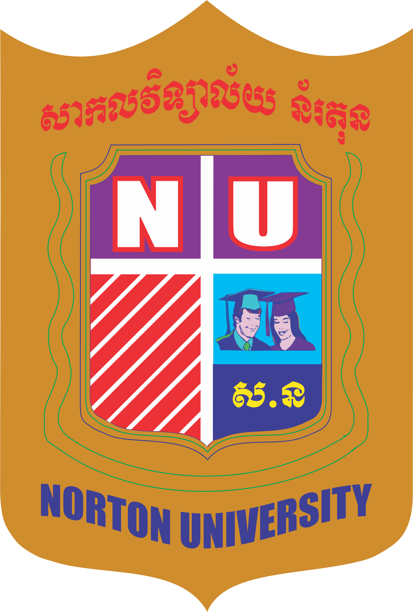

Education
.avif)
Sister of Code
Employment Skills Program
UX/UI Design
Southeast Asia Language School
English Program
Pre-Intermediate

Norton University
Bachelor of Computer Science
Information Technology
About Me
Hi, I'm Bo Thavy, an Information Technology student with a passion for UX/UI Design, Web Design, and Database Management. I enjoy creating user-friendly digital experiences by combining creativity, design thinking, and technology.
I have experience using Figma, HTML, CSS, JavaScript, Bootstrap, Git, and SQL. Through academic projects and self-learning, I have developed skills in user research, wireframing, prototyping, responsive web design, and database management.
I am always eager to learn new technologies, collaborate with others, and continue improving my technical and creative skills while preparing for a career as a UX/UI Designer and IT Professional.
Employment Skills Program
UX/UI Design
English Program
Pre-Intermediate

Bachelor of Computer Science
Information Technology